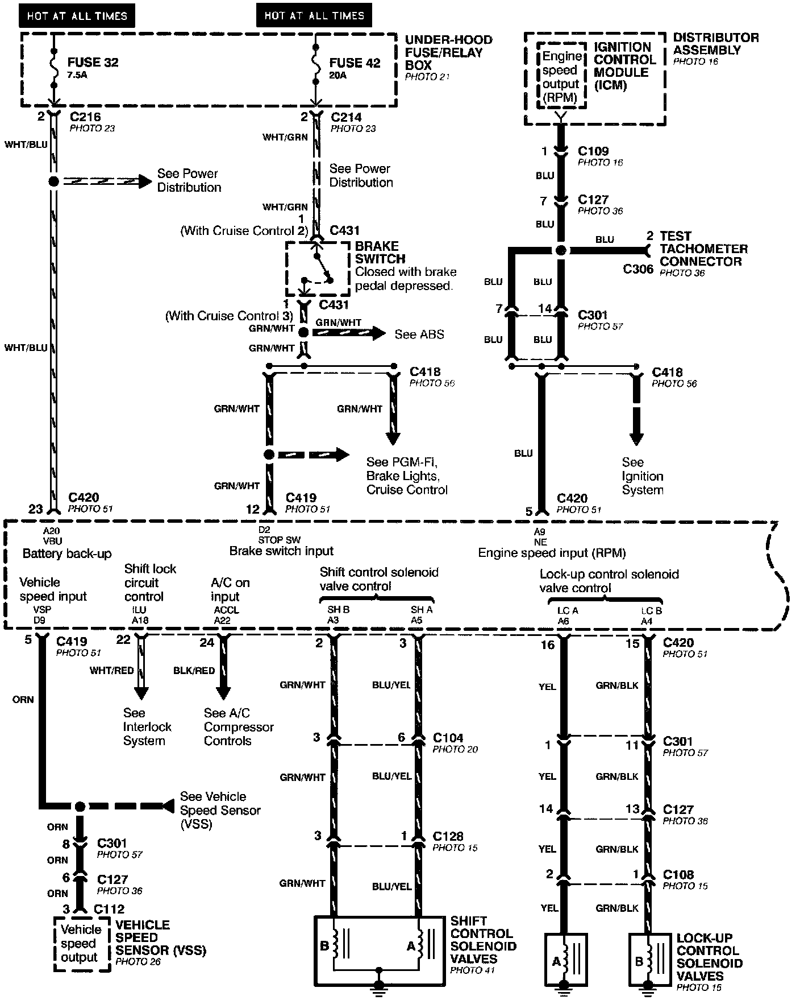
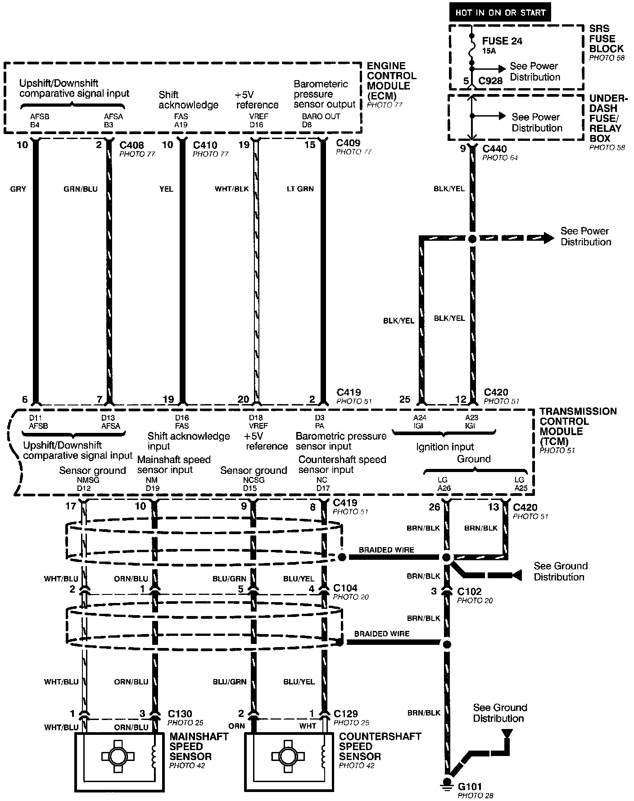
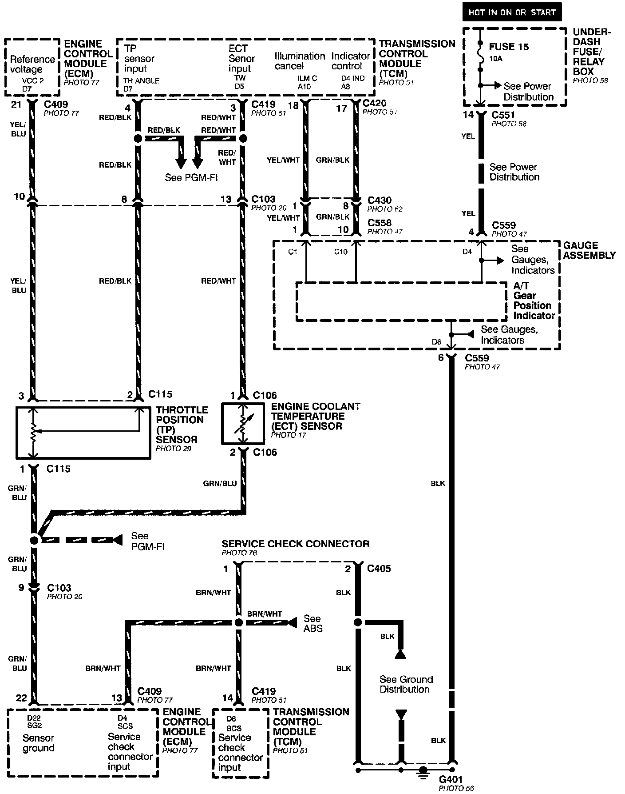
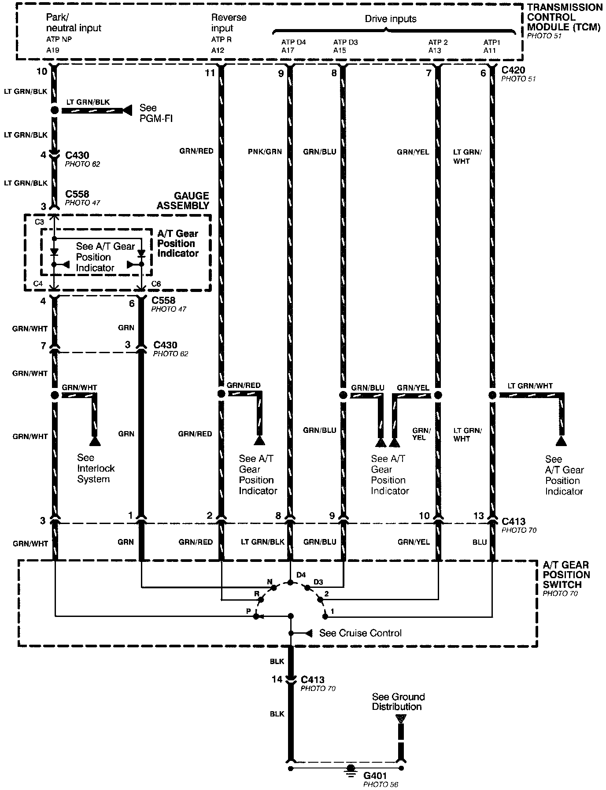

Automatic Transmission Controls
Automatic Transmission Controls (Part 1 Of 4):

Automatic Transmission Controls (Part 2 Of 4):

Automatic Transmission Controls (Part 3 Of 4):

Automatic Transmission Controls (Part 4 Of 4):
